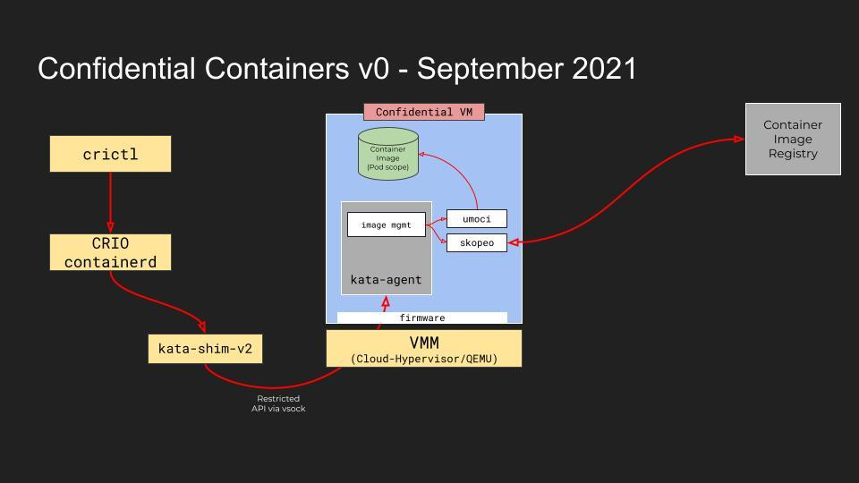
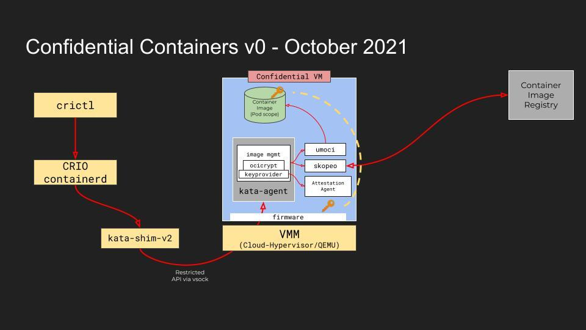
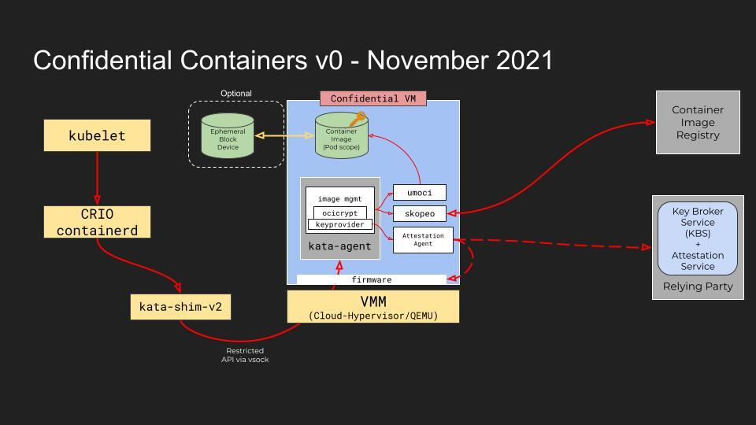

Confidential Containers Roadmap
When looking at the project’s roadmap we distinguish between the short-term roadmap (2-4 months) vs. the mid/long-term roadmap (4-12 months):
The short-term roadmap is focused on achieving an end-to-end, easy to deploy confidential containers solution using at least one HW encryption solution and integrated to k8s (with forked versions if needed)
The mid/long-term solutions focuses on maturing the components of the short-term solution and adding a number of enhancements both to the solution and the project (such as CI, interoperability with other projects etc.)
Short-Term Roadmap
The short-term roadmap aims to achieve the following:
MVP stack for running confidential containers
Based on and compatible with Kata Containers 2
Based on at least one confidential computing implementation (SEV, TDX, SE, etc)
Integration with Kubernetes: kubectl apply -f confidential-pod.yaml
The work is targeted to be completed by end of November 2021 and includes 3 milestones: 
September 2021
Unencrypted image pulled inside the guest, kept in tmpfs
Pod/Container runs from pulled image
Agent API is restricted
crictl only

October 2021
Encrypted image pulled inside the guest, kept in tmpfs
Image is decrypted with a pre-provisioned key (No attestation)

November 2021
Image is optionally stored on an encrypted, ephemeral block device
Image is decrypted with a key obtained from a key brokering service (KBS)
Integration with kubelet
For additional details on each milestone see Confidential Containers v0.
Tasks are tracked on a weekly basis through a dedicated spreadsheet. For more information see Confidential Containers V0 Plan.
Mid-Term Roadmap
Continue our journey using knowledge and support of Subject Matter Experts (SME’s) in other projects to form stronger opinions on what is needed from components which can be integrated to deliver the confidential containers objectives.
Harden the code used for the demos
Improve CI/CD pipeline
Clarify the release process
Establish processes and tools to support planning, prioritisation, and work in progress
Simple process to get up and running regardless of underlying Trusted Execution Environment technology
Develop a small, simple, secure, lightweight and high performance OCI container image management library image-rs for confidential containers.
Develop small, simple shim firmware (td-shim) in support of trusted execution environment for use with cloud native confidential containers.
Document threat model and trust model, what are we protecting, how are we achieving it.
Identify technical convergence points with other confidential computing projects both inside and outside CNCF.
Longer-Term Roadmap
Focused meetings will be set up to discuss architecture and the priority of longer-term objectives in the process of being set up.
Each meeting will have an agreed focus with people sharing material/thoughts ahead of time.
Topics under consideration:
CI/CD + repositories
Community structure and expectations
2 on Mid-Term Architecture
Attestation
Images
Runtimes
Proposed Topics to influence long-term direction/architecture:
Baremetal / Peer Pod
Composability of alternative technologies to deliver confidential containers
Performance
Identity / Service Mesh
Reproducible builds/demos
Edge Computing
Reduce footprint of image pull